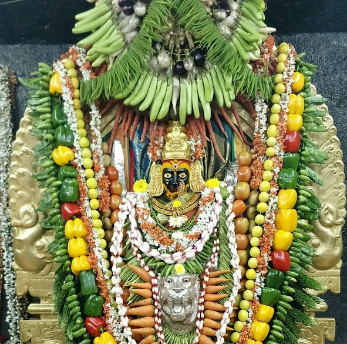
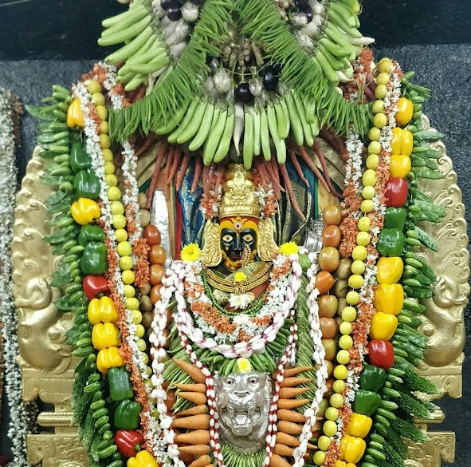

Located atop Mysuru's Chamundi Hills, this temple is dedicated to Goddess Chamundeshwari, a fierce form of Parvati identified with Durga. The deity here is revered as the Nada Devi by Kannadigas, and was the royal patron deity of the Wodeyar dynasty. Traditionally associated as the place where the goddess slew the demon Mahishasura, it is regarded as one of the 18 Maha Shakti Peethas, as the hair of Sati is believed to have fallen here. The temple attracts large numbers of devotees and tourists every year, especially during the annual festival of Navaratri, when the goddess is adorned with different jewelry and attire each day. The temple's location on the hill also offers panoramic views of Mysuru city.
Images showing the Chamundeshwari Temple Gopuram and the Utsava Murthi of the Goddess.
Situated in Dharmasthala in the Western Ghats, this temple is dedicated to Lord Shiva as Manjunatha. The temple is believed to have been built 800 years ago by a Jain family to protect Dharma and worship Daivas. Even today, the worship of the four Dharma Daivas continues, and Dharmasthala is widely known for its charitable activities and emphasis on Dharma. The temple attracts large numbers of devotees and tourists every year, especially during the annual festival of Maha Shivaratri. The temple is also known for its unique tradition of worshipping the deity with a mixture of sandalwood paste and turmeric, which is believed to have medicinal properties.
Images showing the Manjunatha Temple Gopuram and the idol of the God.
Located on the banks of the Kabini River, this temple is dedicated to Lord Shiva as Srikanteshwara or Nanjundeshwara. 'Nanjundeshwara' translates to the 'God who drank poison', referring to Shiva drinking the Halahala poison during the Samudra Manthan incident. The deity in this temple is believed to have immense healing properties and is often referred to as 'Dakshina Kashi', being an important Shaivite pilgrimage center in Karnataka. Moreover, the temple is one of the 18 Maha Shakti Peethas, as the feet of Sati are believed to have fallen here. It is also known for its annual festival called 'Nanjundeshwara Jayanthi', the temple attracts large numbers of devotees and tourists every year, especially during the festival.
Images showing the Srikantheshwara Temple Gopuram and a Shiva Statue in Nanjangud.
Located in the coastal town of Udupi, this temple is dedicated to Lord Krishna and was established in the 13th century by the Vaishnavite Philosopher-saint Madhvacharya. The temple is administered by eight monasteries known as the Ashta Mathas, which take turns managing the temple for 2 years through a rotational system called Paryaya. The Krishna idol, which has miraculously rotated, is uniquely worshipped through a silver-plated window known as Kanakana Kindi, named after Haridasa saint Kanakadasa. The temple remains an important center of Dvaita Vedanta philosophy.
Images showing the Udupi Krishna Temple Gopuram and the idol of the God.
Situated in Gokarna along the Arabian Sea coast, this temple dedicated to Lord Shiva houses the revered Atmalinga. One of the seven Muktikshetras of Karnataka, the Atmalinga was brought by the demon king Ravana from Mount Kailasa and became fixed at Gokarna. Nearby beaches such as Gokarna Beach and Om Beach add to the town’s prominence. The temple is one of the 18 Maha Shakti Peethas, as the head of Sati is believed to have fallen here. Along with the temple, the town of Gokarna attracts large numbers of devotees and tourists every year, especially during the annual festival of Maha Shivaratri.

Images showing the Mahabaleshwara Temple Gopuram illuminated with lights and the nearby famous Om Beach.
Located in Murudeshwar, the coast south of Gokarna, this temple is dedicated to Lord Shiva and is associated with the Atmalinga legend of Gokarna. The site houses a towering 123-foot statue of Lord Shiva installed in 2008, making it one of the tallest Shiva statues in the world. The temple complex also features a 20-storied gopuram and offers views of the statue with the Arabian Sea as its background.Shiva is revered here as Murudeshwara, and the temple attracts large numbers of devotees and tourists alike. The temple is also known for its annual festival called 'Mahashivaratri', which attracts large crowds of devotees.


Images showing the Murudeshwara Temple Gopuram and the famous Shiva Statue.
Located in the UNESCO World Heritage Site of Hampi, this temple is dedicated to Lord Shiva as Virupaksha. It is one of the oldest functioning temples in India and was a prominent center of worship during the Vijayanagara Empire. The temple complex features a towering 9-storied gopuram and intricate carvings reflecting Dravidian architecture. Along with the famed Hampi ruins, the temple attracts thousands of devotees and tourists every year. They also worship the Virupaksha Linga, which is believed to have been consecrated by Lord Shiva himself. The temple's location amidst the ruins of Hampi adds to its historical and spiritual significance, making it a must-visit destination for those interested in Karnataka's rich heritage.
Images showing the Virupaksha Temple Gopuram and the famed Stone Chariot in the ruins of Hampi.
Situated near Badami, this temple is dedicated to Goddess Banashankari, a form of Parvati also known as Shakambhari. Shakambhari translates to the 'bearer of vegetation', and is worshipped as the provider of nourishment. The temple, believed to date back to the 7th century during the Chalukya period, is located near a sacred lake called Haridra Tirtha. In reverence to the Holy Goddess, a replica of the temple has been built in Banashankari, a neighbourhood located in the state's capital of Bengaluru. The temple is one of the 18 Maha Shakti Peethas, as the feet of Sati are believed to have fallen here.
 

Images showing the Banashankari Temple Gopuram and the idol of the Goddess.
Images showing the Banashankari Temple Gopuram in Bengaluru and the idol of the Goddess.
Officially the Shri Jagadguru Shankaracharya Mahasamsthana Dakshinamnaya Shri Sharada Peeth, this temple located on the banks of the Tunga River in Sringeri is dedicated to Goddess Sharadamba, the deity of knowledge and wisdom. The Sharada Peeth was established by Adi Shankaracharya in the 8th century as the first of his four principal monasteries (Amnaya Peethas) in India. The temple complex is also home to the Vidyashankara Temple, known for its architectural brilliance and astronomical alignments. Even today, Sringeri remains an important center of Advaita Vedanta learning. Moreover, the temple is one of the 18 Maha Shakti Peethas, as the hand of Sati is believed to have fallen here.
Images showing the Sharadamba Temple Gopuram and the idol of the Goddess.
Situated in the Western Ghats near the Kodachadri hills, this temple is dedicated to Goddess Mookambika, a form of Shakti regarded as the Supreme Goddess. According to legend, the goddess defeated the demon Mookasura here. The temple is believed to have been consecrated by Adi Shankaracharya. It is a major pilgrimage center, being one of the seven Muktikshetras of Karnataka. The temple is also known for its unique tradition of worshipping the deity with a mixture of sandalwood paste and turmeric, which is believed to have medicinal properties. Mookambika is revered as a compassionate goddess who fulfills the wishes of her devotees, and the temple attracts large numbers of pilgrims, especially During Navaratri celebrations.
An image showing the Mookambika Temple Gopuram.
Located atop a hill near Yedeyuru in Mandya district, this temple is dedicated to Lord Kaal Bhairav, a fierce manifestation of Shiva. The temple is closely associated with the Adichunchanagiri Math, a prominent spiritual institution. A distinctive feature of this temple is the special reverence given to dogs. Devotees often bring dogs to the temple, and it is believed that feeding and caring for dogs here can bring blessings from Lord Bhairav. The temple is also known for its annual festival called 'Bhairava Jayanthi', which attracts large crowds of devotees. At Adichunchanagiri, dogs are treated with respect and are considered sacred companions of the deity.

Images showing the Adichunchanagiri Temple Gopuram, the idol of the God, and dogs being worshipped at the temple
Situated in the city of Hassan, this temple is dedicated to Goddess Hasanamba, the presiding deity of the region. The temple is unique because it opens to devotees only once a year during the Deepavali festival, for about a week. During this period, thousands of devotees gather for darshan. The temple is believed to have been built in the 12th century during the Hoysala period. The deity is revered as a powerful goddess who protects her devotees from evil forces. The temple's annual opening and the belief in the goddess's protective powers make it a significant spiritual center in Karnataka.
Images showing the Hasanamba Temple Gopuram and the idol of the Goddess.
Situated on the banks of the River Kaveri near Srirangapatna, this temple is dedicated to Goddess Nimishamba, a fierce form of Parvati. The name 'Nimishamba' is derived from the word 'nimisha', meaning 'a minute', and 'amba', meaning 'mother goddess', signifying the belief that the goddess fulfills devotees’ prayers within a minute. The temple is believed to have been built during the reign of the Wodeyars of Mysore. It remains an important Shakti shrine in the region and attracts large numbers of devotees, especially on Fridays and during Navaratri celebrations. The temple's location near the Kaveri River adds to its spiritual significance, as the river is considered sacred in Hinduism.
Images showing the Nimishamba Temple Gopuram and the idol of the Goddess.
Located in the scenic Western Ghats of Chikkamagaluru district, this temple is dedicated to Goddess Annapoorneshwari, the goddess of nourishment and food. The temple is known for its tradition of serving meals to all devotees without discrimination, free of cost every day. The temple is believed to have been established in the 15th century by a local chieftain named Adi Shankaracharya. The deity is revered as a compassionate goddess who provides sustenance to all, and the temple's charitable food service continues to be a significant aspect of its spiritual mission. Throughout the year, especially during festivals like Navaratri, the temple attracts large numbers of devotees who come to seek the blessings of the goddess and partake in the communal meals. The temple's location amidst the lush greenery of the Western Ghats adds to its serene and spiritual ambiance, making it a popular pilgrimage destination in Karnataka.
Images showing the Annapoorneshwari Temple Entrance and the idol of the Goddess.
Located in Halebidu, the former capital of the Hoysala Empire, this temple is dedicated to Lord Shiva as Hoysaleswara. Built in the 12th century during the reign of King Vishnuvardhana, the temple is a masterpiece of Hoysala architecture. Famous for its intricate stone carvings depicting Scenes from the Ramayana, Mahabharata, and various Puranas, this UNESCO World Heritage Site interests large numbers of devotees and tourists daily. Although partially damaged during invasions, the temple remains one of the finest examples of medieval Indian temple art.
Images showing the Halebidu Temple Entrance and the idol of the God.